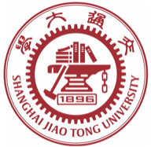
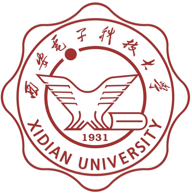

上海交通大学 · PhD · 2027 Fall
Chenyang
Fu.付晨阳
LLM Agents ／ Agentic RL ／ RSI
探索更高效、能够持续进化的大语言模型智能体：从推理与决策，到交互中的强化学习与递归自我改进。
01 / ABOUT
关于我
你好，我是付晨阳，即将于 2027 年秋季入读上海交通大学博士项目。
我的研究兴趣是 LLM Agents、Agentic RL 和 RSI（递归自我改进）。我关注智能体如何在复杂任务中高效推理与决策，如何通过交互和反馈学习，以及如何持续改进自身能力。此前，我参与了张宁豫老师指导的智能体研究，也在沈玉龙教授团队参与 CryptoLLM 的语料构建与后训练工作。

上海交通大学
计算机学院博士
2027 Fall · 即将入学

西安电子科技大学
大数据管理与应用 · 本科
2023.09 — 至今
02 / SELECTED RESEARCH
研究工作
已有工作涵盖上下文管理、动态推理与高效适配，为进一步探索智能体强化学习与自我改进积累经验。
Light-LoRA Adaptive And Low-Parameter Methods
面向差分隐私联邦学习，探索低参数 LoRA 适配方法，缓解双因子训练的噪声放大与通信开销问题。
我的工作
采用三因子低秩表示，仅训练中间矩阵 R；设计坐标变换潜空间映射协议；通过服务端周期性 SVD 重定向，让低秩子空间适应全局更新方向。
Dynamic Reasoning of Large Model Agents Based on Metacognitive Router
面向多轮交互中的资源分配问题，让智能体根据任务特性动态调整推理与检索策略。
我的工作
负责 Trigger 模块的数据生成与 SFT 冷启动，使用 LLaMA-Factory 完成训练；基于 Alibaba ROLL 为 Trigger 与 Reason 模块开展 GRPO 强化学习训练。
03 / SELECTED PROJECTS
从研究到实践
CryptoLLM
密码学领域大语言模型
参与 CryptoCorpus 5B 级语料库构建，覆盖六类异构数据来源；基于 Qwen3-32B 进行指令微调、对话增强与强化学习，参与模型迭代至 V3.0。
无人机射频识别
陕西省大学生创新创业计划
采集无人机图传信号，通过 STFT 构建时频谱图数据集；结合改进 AlexNet 与 YOLO，开展低空无人机信号识别。
光纤传感解调
西电腾飞科创计划
基于珐珀腔干涉原理构建含噪光谱数据集；设计均匀分光与滤波方案，结合轻量型 CNN 和注意力模型探索高精度解调。
04 / RECOGNITION
沿途的积累
在学术训练与跨学科实践中，保持好奇，持续积累。
全国大学生数学竞赛
省级一等奖中国大学生计算机设计大赛
省级二等奖 · 两项（含人工智能赛道）美国大学生数学建模竞赛
国际二等奖全国大学生数学建模竞赛
省级一等奖服务外包创新创业大赛
国家三等奖05 / LIFE
我的生活
我女朋友的主页
这里也留一个位置，给生活中重要的人。
06 / GET IN TOUCH
从一次交流开始。
欢迎交流 LLM Agents、Agentic RL 与 RSI 相关的研究问题。